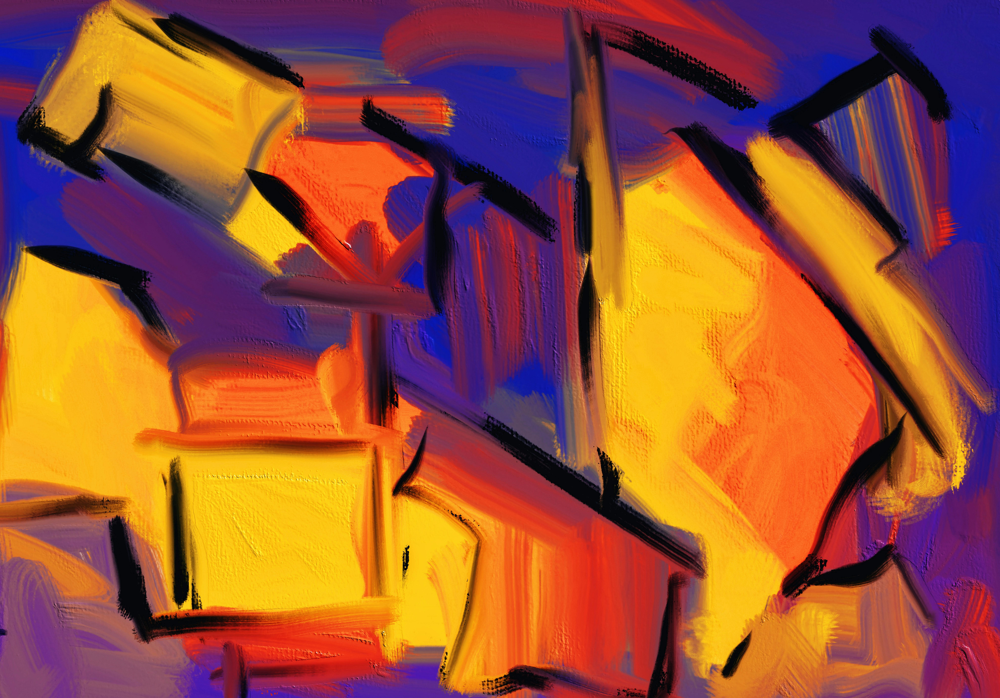
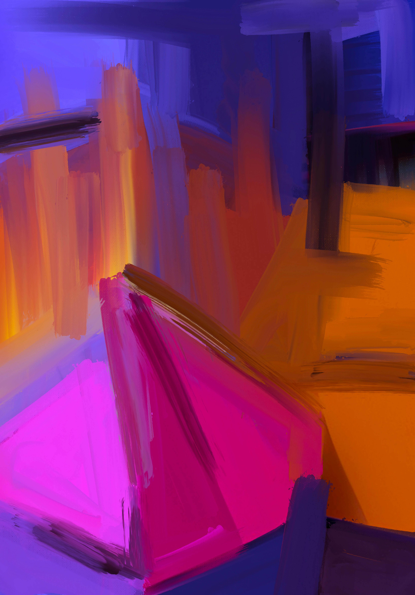

En Foco
Política
La estética del poder en la era de los discursos virales

Branding
Cómo las marcas construyen confianza visual

Digital
La inteligencia artificial como nuevo lenguaje cultural
Medios
El streaming y la transformación de la opinión pública
Cultura
La ciudad como escenario de nuevas narrativas visuales
Nuevas Voces

Juan Pérez
Comunicación Política · UNLaM
La comunicación política en tiempos de algoritmos
María Gómez
Diseño UX · UBA
Diseñar para usuarios o para métricas
Lucía Torres
Periodismo Digital · UNLaM
La noticia como experiencia visual
Tomás Bianchi
Branding Cultural · UNDAV
Las marcas también construyen ciudadanía
LA PREGUNTA
¿La política se volvió una cuestión estética?
Una pregunta. Varias miradas. Un mismo tema atravesado desde la comunicación, el diseño, los medios, la academia y las nuevas voces.
Explorar perspectivas →